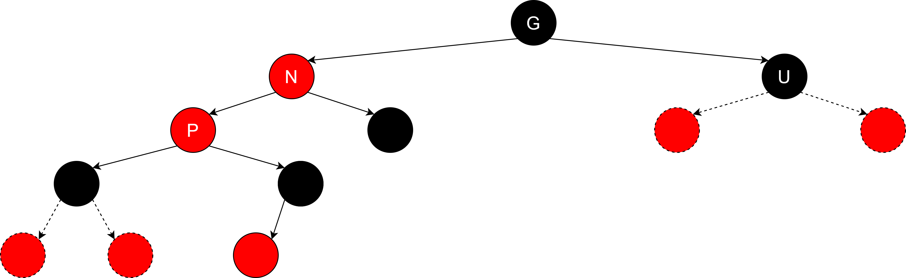

前言
在沉浸了一年多之后，我开始重新拾起了写博客的习惯。过去一年主要在忙我的书的事情，一本关于如何实现Lua解释器的书–《Lua解释器构建：从虚拟机到编译器》。这本书将由机械工业出版社出版，目前已经过了终审，处于校对环节，预计明年1月能够出样书，大概2月份能够上市。随书源码已经放到github上了，有兴趣的读者可以点击这里进行访问。由于我想写的内容已经在书中展现，因此原来的博客dummylua-tutorial系列不再更新。
对书籍的预热结束，言归正传，本篇将深入探索红黑树。红黑树由于难于理解与实现，业内一直将“手撸红黑树”作为调侃的梗。本文将要探索的是红黑树的设计与实现，在开始写博客之前，我已经动手将红黑树实现了一遍，并且通过了预定的测试，确实是“手撸红黑树”了，XD。该项目我已经放到github上，读者可以通过这个链接red-black-tree进行下载。
和AVL树相比，红黑树除了会进行旋转，还有复杂的颜色状态改变，因此我们面临的变数会比AVL树多很多，这也是其复杂的原因。但是由于AVL树规定，左右子树的高度差超过1时就要旋转，而红黑树则不然，允许左右子树的高度差相差两倍，因此红黑树比AVL树会有更少的旋转机会，更适合在频繁插入和删除的应用情景。
网络上已经有很多关于红黑树的优秀文章了，为什么还要写这篇呢？首先，纸上得来终觉浅，只有自己亲自动手实践，才有可能尽最大可能还原事物的真相，这样自己的理解才能更深，本文也是我动手实践之后的梳理和总结。其次，网上众多文章中，确实有相当大一部分缺乏实践的例子，即使有，也很难直观地观察红黑树在插入和删除的变化流程，也不方便发现代码中出现的bug。为此，我专门写了一个图形化的展示工具，用于展示我写的红黑树的效果，如图1所示。这个工具姑且就叫red black tree viewer。读者在下载该项目之后，可以在工具中动态添加和删除节点。Red Black Tree Viewer还支持拖动功能，方便在树很深的情况下（会超出窗口）拖动观测。
图1
最后由于本人水平有限，无法做到面面俱到，如果读者在研究过程中发现任何问题或者好的建议，欢迎在github仓库上提issue给我。读者也可以加入我建的技术讨论群：QQ185017593。后面将正式进入正文。
1 红黑树的概念和性质
1.1 什么是红黑树？
红黑树（英语：Red–black tree）是一种自平衡二叉查找树，是在计算机科学中用到的一种数据结构，典型用途是实现关联数组。它在1972年由鲁道夫·贝尔发明，被称为”对称二叉B树”，它现代的名字源于Leo J. Guibas和罗伯特·塞奇威克于1978年写的一篇论文。红黑树的结构复杂，但它的操作有着良好的最坏情况运行时间，并且在实践中高效：它可以在O(log n)时间内完成查找、插入和删除，这里的n是树中元素的数目。[1]
1.2 红黑树的性质
红黑树的性质，维基百科上将其归纳为以下几点：
性质1) 节点是红色或黑色。
性质2) 根是黑色。
性质3) 所有叶子都是黑色（叶子是NIL节点）。
性质4) 每个红色节点必须有两个黑色的子节点。（或者说从每个叶子到根的所有路径上不能有两个连续的红色节点。又或者说不存在两个相邻的红色节点，相邻指两个节点是父子关系。还或者说红色节点的父节点和子节点均是黑色的。）
性质5) 从任一节点到其每个叶子的所有简单路径都包含相同数目的黑色节点。
在维基百科的词条中，将NIL节点作为红黑树的叶子节点，如图2所示。不过在实际的实现中，这些NIL节点并不需要真实存在，本文的实现，也不将NIL作为叶子节点，网上能找到的实现中，有些会创建专门的NIL节点，有些则通过NULL值来表示。为了更契合本文的实现，本文不会将NIL节点显示出来，而是将NIL节点的父节点作为真正的叶子节点，如图3所示。
图2
图3
1.3 识别正确的红黑树
在深入研究红黑树之前，我们首先要对红黑树的性质有一定程度的理解，第一步则是识别出正确的红黑树应该是长什么样子的。这点非常重要，因为对于理解后续的流程说明，有非常重要的意义。现在读者来观察一下图4，先判断一下哪几个是合法的红黑树？
图4
在图4中，(1)和(2)是合法的红黑树，其余的都不合法。其中(3)违反性质2，(4)违反性质4，(5)违反性质5。添加识别红黑树的环节，主要是为了增强读者对红黑树性质的直观感受，后续出现的证明，逻辑流程均是紧扣性质。因此，牢记并理解这几条性质，具有非常重要的意义。
1.4 查找效率
红黑树的算法复杂度是O(log n)，那么这个O(log n)是怎么得出来的呢？本节将论证这一点。首先，怎么理解log(n)?我们都知道，自然对数是ln()来表示，以10为底数的对函数函数用log()来表示，而以2为底数的对数函数用lg()来表示。这些有类似风格的函数，一般被归类为log(n)[2]。
由于红黑树是自平衡二叉树，位于根节点左边的数值一定比根节点小，而位于根节点右边的节点，一定比根节点大，所有的节点，均是根据它们的值有序排列的。那么查找一个节点，最坏的情况，就是经历h次比较，而这个h则是树的高度，如图5所示。
图5
图中展示的是一个比较理想的状态，是一颗满二叉树。查找的是值为3的节点，一共进行了3次比较，而3也正是图5所示的二叉树的树高。首先要来看的是，满二叉树的树高是怎么求的，这个证明不是必须的，不过也挺有意思，目的是给读者展现树高和节点数的某些联系。在一颗满二叉树中，每一层的节点树是2l-1，l是level的缩写，意味每一层次。那么假设满二叉树的节点数为m，树高为h，那么m和h的关系则如下所示：
m = 20+21+…+2h-1
令Sn=m，那么2Sn则为：
2Sn = 21+22+…+2h
2Sn - Sn = 21+22+…+2h-20-21-…-2h-1
Sn = 2h-20
Sn = 2h-1
m = 2h-1
m + 1 = 2h
h=log2(m+1)
接下来来看一下与红黑树有关的4个定理[3][4]:
定理1：任意以x为根节点的红黑树，都有n>=2bh(x)-1个节点，bh(x)表示以x为根节点的红黑树的黑色节点高度。
怎么理解这个定理呢？首先要理解bh函数代表了什么，观察一下图6，图中展示了每个节点的bh值。图中的B.H就是bh(x)的值，x表示以x节点为根节点。当x节点的孩子节点为红色时，其B.H值与父节点一致，当孩子节点为黑色时，B.H值为父节点的B.H值-1。
图6
以图6为例，根节点的左右孩子节点，均是红色，那么它们的B.H值与父节点一致，也就是2，那么以红色孩子节点为根节点的子树，内部节点（排除NIL以外的节点）的数量则至少是2bh(root)-1，也就是22-1，即3个节点。这个符合红黑树的性质。红色孩子节点的子节点，必定是黑色节点，而且红色节点的左右孩子节点均不为空。那么红色孩子节点的子节点，至少有多少个内部节点呢？通过同样的公式，计算得到21-1=1。我们目前通过了图6，对定理1有了直观地感受了，接下来将证明定理1。如图7所示，根节点为x的红黑树，L和R为其左右子节点，以L为例，如果L为红色，那么其内部节点数则是2bh(x)-1，如果L为黑色，那么其内部节点数则是2bh(x)-1-1。显然，要求最小值，就应当将L和R均视为黑色节点，因为这样计算出来的结果更小。此时令L和R的最少内部节点数分别为a和b（如图8所示），那么以x为根节点的红黑树，节点数最少为a+b+1。于是有：
n >= 2bh(x)-1-1 + 2bh(x)-1 - 1 + 1
n >= 2bh(x) - 1
图7
图8
定理2：在红黑树中，从根节点到NIL节点的路径中，至少有一半的节点是黑色。
这个比较好理解，首先由于根节点必须是黑色，然后性质4决定了，不可能存在父子节点均是红色的情况，但是又允许父子节点均是黑色，因此，从根节点开始到任意NIL节点，红色节点能够出现最多的情况，也只是一部分路径是红黑相间，并且以红色节点作为最后的叶子节点，而这种情况下红色节点最多占一半，反过来说，黑色节点在所有的路径中，至少占一半。读者可以观察一下图9的情况，值为6的红色节点，不可能再有孩子节点，因为如果其有红色的孩子节点，则违反了性质4，如果有黑色节点，则违反了性质5。所以，从2-6的这条路径中，已经做到了红色节点数量最大化。
图9
定理3：在以x为根节点的红黑树中，从x出发到NIL节点的最长路径，不能超过最短路径的两倍。
还是以图9为例，2-6的路径最长，2-1的路径最短，它们之间的长度比不超过2倍。这也适用于其他情形。
定理4：一个有n个节点的红黑树，其高度h<=2lg(n+1)。
这个性质实际上就是要证明红黑树的算法复杂度，根据定理1，我们知道了n >= 2bh(x) - 1。根据定理2，我们可以得到bh(x) >= h(x) / 2，于是有：
n >= 2bh(x) - 1
n >= 2h(x)/2 - 1
n + 1 >= 2h(x)/2
log2(n+1) >= log22h(x)/2
log2(n+1) >= h(x)/2
2 * log2(n+1) >= h(x)
h(x)为树高记为H，前面也提到过，以2为底数的对数函数，可以用lg这个函数表示，于是有：
2 * lg(n+1) >= H
前面我们也证明了，红黑树的查找效率，实际上最差的情况，就是比较次数为树高，于是红黑树的查找效率为2 * lg(n+1)，可以归类到O(log n)的范畴里。
2 插入
本节开始讨论红黑树节点插入的情况，首先会阐述的是红黑树的查找逻辑，然后对插入的几种情况进行讨论。
2.1 查找逻辑
插入红黑树之前，首先要查找树中是否已经存在节点的值与要插入的值相等，如果有则流程终止，如果没有则需要找到新插入节点的父节点。实现逻辑非常简单：
static RBTreeNode* search(RBTreeNode* parent, RBTreeNode* node, int val) {
if (node == NULL)
return parent;
if (node->val == val) {
return node;
}
RBTreeNode* ret = NULL;
if (val <= node->val) {
ret = search(node, node->left, val);
}
else {
ret = search(node, node->right, val);
}
return ret;
}search函数如果返回的Node节点的值，与插入值相等，那么说明已经存在这个节点了，不应该继续插入。如果search函数返回一个值与插入值Val不相等的节点，那么需要创建一个新的节点，新节点将作为search函数返回节点的孩子节点，同时新节点的值赋值为插入变量Val。如果search函数返回NULL，说明红黑树是空的，新插入的节点将作为根节点。图10-图12说明了这点。
图10
图11
图12
2.2 插入根节点
插入的第一种情况，就是插入根节点，2.1节已经有介绍search函数返回NULL指针时，表示红黑树为空，此时新增节点直接作为根节点存在，并且染成黑色。
2.3 父节点为黑色的情况
插入的第二种情况，则是通过search函数找到黑色的父节点。由于新增的节点一定是红色，所以在这种情况下直接插入即可，新节点插入后的红黑树，仍然满足其5个性质，图13则展示了这一点。
图13
2.4 父节点为红色的情况
现在开始讨论稍微复杂一点的情景，当新增节点的父节点为红色时，会出现什么样的情况？这里又延伸出几种情况，现在通过图14来展示，N表示新增加的节点，P表示N的父节点，U表示N的叔节点，G表示N的爷节点。当父节点为红色时，树违反了性质4，因此要做一些处理。而叔节点U的情况又影响了最后的处理结果。现在逐一对其进行分析。
图14
新增节点N的父节点P是红色，因此其爷节点G必定是黑色的，那么其叔节点U就有几种情况了：
- 叔节点U不存在。
- 叔节点U存在且为红色。
由于红黑树的性质限制，如果叔节点U存在，那么它不可能为黑色，否则新节点N插入前这棵树就违反了性质5。现在先来讨论叔节点U不存在的情况，这种情况分为两种，图14中已经有展示了，分别是新增节点N是父节点P的左孩子节点和右孩子节点的情况，现在先来看N为P的左孩子节点的情况。
观察图14的第一种情况，当U不存在时，且当N为P的左孩子节点时，存在N < P < G，由于此时的红黑树已经违反了性质4，因此它需要发生旋转，在N < P < G的情况下，需要对G进行右旋转。为什么要右旋转？因为新增节点（N）和其父节点（P）均为红色时，意味着以G为根节点的红黑树的左子树（P位于G的左边）或右子树（P位于G的右边）高度增加了，此时需要从树高更高的一侧向树高较低的一侧倾斜，才有机会达到左右子树的平衡，因此此时G向右旋转并且交换P和G的颜色，得到图15的情况。这里讨论的右旋转还是比较简单的情况，现在来看一下P左右有子树，G右边有子树的情况，那么G向右旋转的情景则如图16所示，三角形代表子树，当G右旋转时，P的右子树会变成G的左子树，并且P变成G的父节点。这就是右旋转的一般情况。同样的，当P向左旋转时，G的左子树将会成为P的右子树，同时G重新成为P的父节点。
图15
图16
接下来要观察的是，图14中的第二种情况，当U不存在时，且当N为P的右孩子节点，存在P < N < G，由于此时红黑树已经违反了性质4，因此它需要发生旋转，在P < N < G的情况下，需要先对P进行左旋转，然后再对G进行右旋转。为什么要这样做呢？回顾一下图16的情况，如果直接对G进行右旋转（如图17所示），那么N将会变成G的左孩子节点，虽然P < N < G仍然成立，但是交换了P和G的颜色之后，还是违反了性质4，并且树也未达到平衡的状态，对P进行左旋转，目标还是满足P < N < G的条件，同时保证在G右旋转后，N不会跑到G那一侧，如图18所示。
图17
 图18
图18
接下来要讨论的情况，则是图14中，叔节点U存在的情况。前面也讨论了，在这种情况下叔节点U只能是红色，遇到这样的情况只需要直接将P和U设置为黑色，同时将G设置为红色，那么以G为根节点的（子）树，黑色高度并没有发生改变，且满足红黑树的几个性质，如图19所示。
图19
在节点G从黑色变为红色之后，以G为根节点的黑色树高并没有发生改变，此时又将遇到新的情况。可以分为以下几种：
- 节点G是整棵红黑树的根节点。
- 节点G不是整棵树的根节点，那么情况又要细分为：
- 节点G的父节点是黑色。
- 节点G的父节点不是黑色。
如果节点G是整棵红黑树的根节点，那么直接将节点G染成黑色即可，其他什么事情都不用做。如果节点G的父节点是黑色，那么也是什么事都不用做，因为G子树的黑色高度没有发生改变，并且G的父节点是黑色的，没有违反红黑树的任何一个性质。不过如果G的父节点是红色，那么情况就有点复杂了，此时需要将G设置为N，重新观察情况，如图20所示。将G设置为N，继续原来的插入判断流程，此时N的父节点P是红色，那么N的爷节点必然是黑色，N节点是由黑染成红并且父节点为红色，那么它必然有一个黑色的兄弟节点。接下来要看的则是N的叔节点U是红色和黑色的两种情况了，图20中的虚线边缘的红色节点，均表示可有可无，少了其中的一个或者多个都不影响结果。
图20
先要来看的，还是叔节点U是红色的情况，那么在这种情况下，只需要将P和U染成黑色，并且将G染成红色，继续判断G的父节点是红色还是黑色，等于返回了前一个步骤了，如图21所示。可以发现以G为根节点的黑色高度并没有发生改变。
图21
如果叔节点U是黑色，那么会发生什么情况呢？限于篇幅，本文讨论的情况均是P位于G的左侧，P位于G的右侧则需要读者自行推导。此时需要考虑的情况，主要分两种，一种是N位于P的左侧，另一种则是N位于P的右侧，先来看N位于P左侧会发生什么情况。接着图20的情况往下推导，此时N和P是红色，U是黑色，G的左侧出现了父子节点均是红色的情况，说明它的深度增加了，为了维持平衡，需要向右旋转，于是得到图22的结果。然后交换P和G的颜色，得到图23的结果，此时的红黑树满足所有的性质。即便是图中虚线节点，少了一个或多个，均不会违反红黑树的性质。
图22
图23
接下来要看的情况是，N和P是红色，G是黑色，U为黑色，同时N位于P的右边的情况，如图24所示。
图24
此时P的右子树比左子树深，并且G最终是要向右旋转的，因此P首先要向左旋转（原因前面讨论过）得到图25的情况，然后再向右旋转得到图26的情况。最后交换N和P的颜色，得到图27的结果。
图25
图26
图27
不管N是在P的左边，还是在右边，当G向右旋转的时候，必定有一个黑色节点，位于其旋转后的左边，而G本身右边就有一个黑色节点，这就是的G染成红色成为合理的情况，将G的父节点染成黑色，刚好符合红黑树的所有性质。这里还需要强调一次的是，本文讨论的情况，均是P在G左边的情况，P在G右边的情况需要读者自己推导，原理都差不多。
2.5 红黑树的根节点为什么必须是黑色？
作为插入红黑树的最后一个部分，现在需要思考的一个问题则是为什么红黑树的根节点必须是黑色？原因是如果根节点不是保持为黑色，那么节点一直添加，将会在某个时刻违反红黑树的性质。如何性质2可以被忽略，会发生什么事情呢？现在来观察一个例子，假设现在有一个黑色根节点，左边有一个红色的孩子节点，现在往其红色孩子节点左侧插入一个红色节点，得到图28的结果。此时如果P和G的颜色不互换，在这个阶段就已经违反了性质4和性质5了。
图28
接着图28的情况往下，往左边的红色节点继续新增红色节点，得到图29的结果。目前违反了性质2，现在假设这个性质可以忽略，继续往左边添加红色节点，于是得到图30的结果。
图29
图30
此时继续往左侧添加新的节点，得到图31的结果。此时违反了性质4，由于根节点没有父亲节点，因此颜色改变后的节点G没有叔节点，之前的流程无法走下去，因此根节点保持为黑色，能够解决这种特殊情况。
图31
3 删除
本节将开始红黑树删除节点流程的说明，相比于插入，删除要考虑的情况会更复杂一点，但是也是有迹可循的，希望读者在学完这节后，能够理解红黑树删除的流程。
3.1 查找删除节点
要删除节点，首先还是要找到这个节点，使用的仍然是前面提到过的search函数，如果找不到节点则意味着这个节点不存在，删除逻辑不可继续，如果找到了要删除的节点，则进入下一节的流程。
3.2 查找替代节点
删除一个节点时，并不是直接将search函数查找到的节点删除，而是先要查找其替代节点，最后将替代节点的值赋值给目标节点（值为预期被删除的值的节点），然后将替代节点移除。本文查找替代的流程是：
- 如果目标节点的左右子树均不为空，那么目标节点不是叶子节点，需要从右子树查找值最小的节点作为替代节点。
- 如果左右子树都为空，那么目标节点就是叶子节点，该节点将进入移除流程。
- 如果目标节点的左孩子节点为空，则将右孩子节点作为替代节点，如果右孩子节点为空，则将左孩子节点作为替代节点。
怎么理解替代节点的作用呢？现在先来看一下图32的例子。图中，D表示目标节点，R表示替代节点。在前面的查找替换节点的流程中，一个节点的左孩子节点或者右孩子节点为空，这种情况只有父节点是黑色，并且孩子节点是红色，且红色的孩子节点没有孩子节点时才会存在，因为其他情况均违反了红黑树的性质4或者性质5。在目标节点有左右孩子节点的情况下，就会到右侧查找替代节点。图32展示的是其中常见的几种情况，包括替代节点是红色叶子节点、黑色叶子节点、黑色节点带红色孩子节点等。图中虚线外框的部分，表示可以有或者可以没有。
图32
在找到替代节点R以后，会将R的值赋值给D，然后执行节点R的删除流程。为什么要查找替换节点呢？直接删除目标节点不可以吗？这样做的好处是，替代节点一般是叶子节点或者是黑色节点带一个红色的孩子节点。前面也提到过，黑色节点如果有一个孩子节点为空，如果另一个孩子节点存在，那么它必然是红色，且没有黑色的孩子节点，否则就会违反红黑树的性质。这么来看，替代节点一般是叶子节点，或者与叶子节点相邻，删除处理的情况就被极大简化了。
如果没找到替代节点，说明目标节点本身就是叶子节点。
3.3 删除红色节点的情况
上一节已经讨论过，删除一个节点，要查找替代节点，如果替代节点存在，它可能是一个红色或者黑色的叶子节点，或者是一个黑色节点并且带一个红色孩子节点。如果替代节点不存在，那么目标节点本身就是一个红色或者黑色的叶子节点。本节要讨论的是删除一个红色节点的情况。
不管什么情况，目标节点本身是红色叶子节点也好，替代节点是红色的也好，直接将其移除即可，因为它的父节点必定是黑色，它也不可能有黑色的孩子节点（因为红色节点如果有孩子节点，必定是两个黑色的孩子节点，这样的话替换节点就不会是这个红色的节点了），删除红色叶子节点不会改变黑色高度。
3.4 删除黑色节点的情况
接下来要看的是，删除的节点是黑色节点的情况。
3.4.1 父节点为红色的情况
删除黑色节点时，如果其父节点是红色，那么它必定有一个黑色的兄弟节点，因为如果没有兄弟节点的话，就违反了性质5，如有兄弟节点是红色，就违反了性质4。接下来要分几种情况来看：
- 兄弟节点无红色孩子节点。
- 兄弟节点有红色孩子节点。
- 兄弟节点有黑色孩子节点。
现在先来看兄弟节点无红色孩子节点的情况，如图33所示，D是要被删除的节点，S是其兄弟节点，P是其父节点。此时，删除节点D，会直接交换节点P和节点S的颜色，这样以P为根节点的子树的黑色高度就没有发生改变，满足红黑树的性质。
图33
接下来看一下兄弟节点有红色孩子节点的情况。如图34所示，D是要被删除的节点，P是其父节点，S是兄弟节点，N是外甥节点。由于删除节点D之后，以P为根的子树就违反了红黑树的性质5，因此需要通过旋转来解决。由于D是是P的左孩子节点，N又是S的左孩子节点，为了避免P向左旋转后，N变成P的右孩子节点，出现违反性质4的情况，所以S需要先向右旋转，然后P再向左旋转，最后删除D。
图34
现在要看的是，S的右孩子节点为红色的情况，如图35所示。图中虚线边缘表示的节点，表示可以有也可以没有，它的存在与否不会对红黑树的性质产生影响。这种情况下，S不会先向右旋转了，因为红黑树的性质不会被违反。
图35
本小节的最后要讨论的则是黑色兄弟节点，有黑色孩子节点的情况。删除节点的父节点为红色时，比较难出现这种情况，而父节点为黑色，并且爷节点为红色时，则可能出现这种情况，遇到这种情况，直接让爷节点向左旋转即可（需要向右旋转的情况由读者自己去推导）。
图36
本文讨论的情况，均是父节点是左孩子节点，并且删除节点为父节点的左孩子节点的情况，其他情况，如父节点是右孩子节点，删除节点是父节点的右孩子节点的情况等等，则需要由读者自行推导，原理都差不多。
3.4.2 父节点为黑色的情况
删除节点的父节点为黑色时，情况会更复杂一些，主要还是要看兄弟节点的状态，现在细分一下：
- 1）删除节点的兄弟节点是黑色
- 1.1）兄弟节点无红色孩子节点
- 1.2）兄弟节点有红色孩子节点
- 1.3）兄弟节点有黑色孩子节点
- 2）删除节点的兄弟节点是红色（需要先旋转）
- 2.1）新的兄弟节点没有红色孩子节点
- 2.2）新的兄弟节点有红色孩子节点
情况比较多，所以做了编号，方便后面论述。首先要看的是1.1的情况，如图37所示的是最简单的情况，删除节点D的兄弟节点S，会被染成红色，并且将P设置为D，开始新的判断，如果D的父节点P是红色，那么将进入3.4.1节里的第三种情况的流程。如果父节点是黑色，那么重新进入3.4.2节的判断流程之中。如果父节点为空，则流程终止。
图37
接下来讨论1.2的情况，观察图38，D是左孩子节点，兄弟节点S有一个左孩子节点，并且右孩子节点为空，此时S要先向右旋转，然后P向左旋转，最后将N设置为黑色，且删除节点D。从这里可以感受到，红黑树删除节点时，在维持性质的同时，尽可能维持黑色高度不变。图39展示的是S有一个红色右孩子节点的情况。
图38
图39
1.3的情况就比较简单了，观察图40，最右侧的结果，还需要判断节点P的父节点的颜色，如果是红色，则进入3.4.1的流程，如果是黑色，则将P设置为D，继续进行3.4.2的流程。通常这样的操作是通过递归实现的，而需要进行递归判断时，一般是子树的黑色高度发生了改变，因此需要传导给父节点，使得整个红黑树能够在更大的范围内实现平衡。
图39
现在将来研究，删除节点的兄弟节点是红色的情况。遇到这种情况，不论如何，删除节点的父节点都需要先进行旋转，比如删除节点是左孩子节点，则其父节点需要向左旋转，如果删除节点是右孩子节点，俺么父节点则向右旋转，总之逻辑就是节点多的一侧向节点少的一侧旋转倾斜。图40展示的是情况2.1，在完成处理之后，其黑色高度仍然没有变化。
 图40
图40
最后要来研究的是情况2.2，观察一下图41，原来的P向左旋转后，节点D的新的兄弟节点有一个左孩子节点，并且是红色的，此时需要对新的兄弟节点NS向右旋转，然后P再向左旋转，最后交换P和S的颜色。图42则是NS有右孩子节点，并且为红色的情况。
图41
图42
前面论述的情况，基本上是删除的节点是叶子节点的情况，如果被删除的节点带一个红色的右孩子节点，那么删除逻辑走的还是删除叶子节点的逻辑，只是在最后删除节点时，会将这个红色的孩子节点与其父节点关联，具体操作，读者可以阅读随文代码。
到目前为止，基本完成了删除节点的介绍了，其遵循一个规律，尽量维持删除节点后的黑色高度，和删除前保持一致，如果不能，则在维持红黑树性质的前提下，进行递归处理，详情可以查阅随文代码。
4 Red Black Tree Viewer介绍
为了验证本文内容的正确性，以及研究红黑树的操作和性质，如文章开头所说的那样，我也动手实现了红黑树，并为其提供了一个可视化的展示工具，用以校验最终的结果。读者可以通过这个工具添加任意正整数的数值（小于等于10000），也可以删除任意一个已经存在的节点，并且在Viewer中查看最终的结果。 图43
5 BUG反馈
尽管本文的随书代码，经过作者预定的测试，但是由于时间仓促，可能还会存在一些bug，如果读者在查阅过程中发现任何bug，欢迎到github仓库上提issue。 https://github.com/Manistein/red-black-tree/issues
结束语
本文是一篇既讨论了理论，又实现了实践的关于红黑树的博文，一开始说明了红黑树是什么，红黑树的性质，接着又通过数学的方式证明了红黑树的算法复杂度，接着论述了红黑树的插入和删除，最后介绍了本文实现的红黑树查看工具Red Black Tree Viewer，希望读者能通过本文，理解红黑树的性质和运作流程。
Reference
[1] 维基百科 红黑树
[2] What does O(log n) mean exactly? James Oravec’s answer
[3] Red-Black Trees，UMBC
[4] Proof of height of red-black tree is O(lg(n))